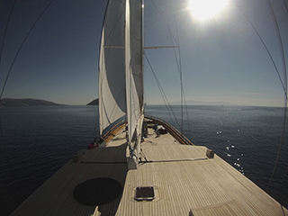

We should like to offer you charter from Turkey to Croatia (from Mai 14 till Mai 29) and from Croatia to Turkey (from October 1 till October 15). This privileged charter should be a very special event. Below we highlight some places you visit during this 15 days charter.
After boarding and a welcome drink the Queen of Datca set sails direction Rhodes. The night is spend in the harbour of Rhodes. In walking distance of the medieval centre of the town. But the harbour is quiet and you shall enjoy the first night on the Queen.
During the charter we never forget to serve food a very high level. When we set sail to Astipalya, the lunch can be served while sailing. And not only today. Sitting on the aft deck you enter one of the bays of Astipalya and...

We set sail and go to Paros/Anti Paros, sailing between the islands is exciting. As shall be the bay for the night.
We are leaving in the morning and go direction Sifnos. The Queen has an experienced crew of 6. English is spoken easily. One of the most important crew is the chef, who takes care of the food. At the Queen of Datca we take care of food at a level. See the sample menu.
Next port shall be Hydra, where donkeys are the way of transport. Hydra is one of the best kept islands of Greece.
Leaving Hydra in the morning, and we are going to pass the Channal of Corintia. One of the oldest and famous channels in the world. After passing the channel you shall be welcomed by dolfins on the other side of the channel. The Dolphins like to play with the Queen of Datca. After a few hours of sailing we arrive in Galaxidi.
Galaxidi is sitting in a beautifull bay and the small town needs to be visited. Life in Galaxidi is starting after the sun is going down. The locals are coming to the harbour after sunset and disucuss the problems of the world.

Next morning we set sail direction Keffalonia. On the way to Keffalonia we pass the bridge of Patras, biggest in Europe. (the Greek tell us ). We can stay in the small harbour of Keffalonia and drink after the dinner an espresso in the harbour.
From Keffalonia we are going direction Corfu. We pass the islands Paxos and anti paxos, good place to stay the afternoon and leave for Corfu in the evening. Sailing during the evening and Enjoying the stars...

In Corfu we can enjoy the island for a few days, to be discussed with the captain. And after having releaxed serious for a few day we are ready to go the North, to Monegro and Dubrovnik.
We are very felixible, the itenearary can be changed easily.